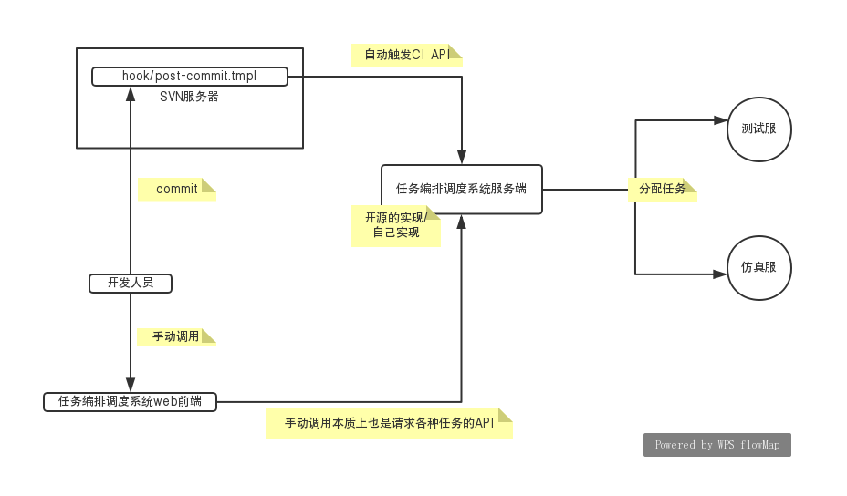

CI
什么是CI？CI是Continue Intergration 即持续集成的简写，那么什么又是持续集成呢？持续嘛，就是一直进行，集成嘛，就是把散装的东西合在一块成为一个可运行的整体。
持续集成就是分工合作的程序员在完成其部分功能模块代码并进行提交合并到代码仓库主分支的过程。提交上去的代码合并完之后能不保证在整体仍然是可运行、无bug(很理想)状态呢？最开始的做法是可以在服务器拉取最新代码到服务器机器上进行编译运行、测试等，通过了测试说明提交的代码没问题，否则就不能合并本次提交到主分支。想要达到持续及高效率状态，那么必然得实现这些流程(提交后)的自动化。实现每次提交代码自动触发服务器拉取代码，编译、测试等等。
原理：
持续集成就是在向代码仓库提交代码后，会自动触发构建以及单元测试这两个动作，然后自动向开发团队反馈本次构建和测试的结果。
常见持续集成系统是 gitlab + jenkins + git,不过我们公司使用的是svn，所以得再调研svn的实现
必要条件：
1. 版本控制的代码仓库，如git、svn
2.持续集成系统，包括自动构建工具和自动触发单元测试工具
那么持续集成系统如何自动触发构建和单元测试动作呢？有一种解决方案是webhook，即设置自定义回调来增强或改变网页或web应用程序行为的方法。就是钩子嘛，钩子可以放在本地，也可以放在SVN服务端，只要有提交，就可以触发钩子内的代码，那么这个钩子该怎么写呢？
公司不知道允不允许我们在svn服务器上放钩子？有一个解决方案是我可以做一个任务编排系统，将写好的脚本编排成任务，放在测试或仿真服务器上，我们自己每次提交完代码后要去执行一下任务编排系统内的任务，该任务安排测试服去拉取代码，然后编译运行测试，将测试结果在发送给编排系统，如果成功了，那么就合并代码到主分支，如果失败了，则不作处理，所以此处可能要搞2个分支，一个为开发分支，一个为主分支。我们commit是commit到开发分支。通过CI后合并到主分支[不知道是否如此?]。
其实就是从代码库服务端检测到有commit后自动触发变为我们客户端commit完后手动调用任务编排系统去手动触发。
问题
既然CI要让没有通过测试的提交不能合并到主分支，那么它怎么让这次提交的代码与主分支代码合并后进行测试呢？
2个分支，当我们commit后，代码库内的分支就已经是合并后的了，但是主分支还没合进去，所以我们拉取的是开发分支，测完再决定是否合并到主分支[不知道是否如此?]。
如果是钩子自动触发，那么这个钩子是放在客户端还是放在SVN服务端？放在客户端又得考虑不同的操作系统的钩子脚本？放在服务端的话允不允许？每个svn文件夹下都有个hook文件夹，可以存放钩子脚本。
首选在svn服务器放钩子
如果不使用钩子，而采用任务调度编排系统的话，得开发人员主动去启动任务，但是人往往是不可靠的，有可能会忘记。
方案
粗糙方案1
自己用golang写一个api服务(简单的任务编排调度系统)。该api服务提供一个接口，当svn收到一个commit时，自动触发这个提前写好的钩子脚本，钩子脚本请求该api(curl)，该api服务收到请求后执行一系列脚本，脚本1将开发分支代码拉取到其本地，脚本2执行项目中写好的编译脚本对拉取的代码进行编译，并运行；脚本3执行项目内写好的单元测试，如果通过测试，将开发分支代码合并到主分支，如果不同过，则revert到上一版本，并将执行结果通过某方式发送给任务调度系统，该系统将结果存储起来，在前端查询的时候进行返回展示。
流程

该方案几个关键点：
这一整套服务是部署在内网还是公网？先内网?
公司内网让不让在svn服务器上放钩子脚本？
这个任务编排调度系统该怎么设计？先就实现一个接口？完成持续集成的功能？